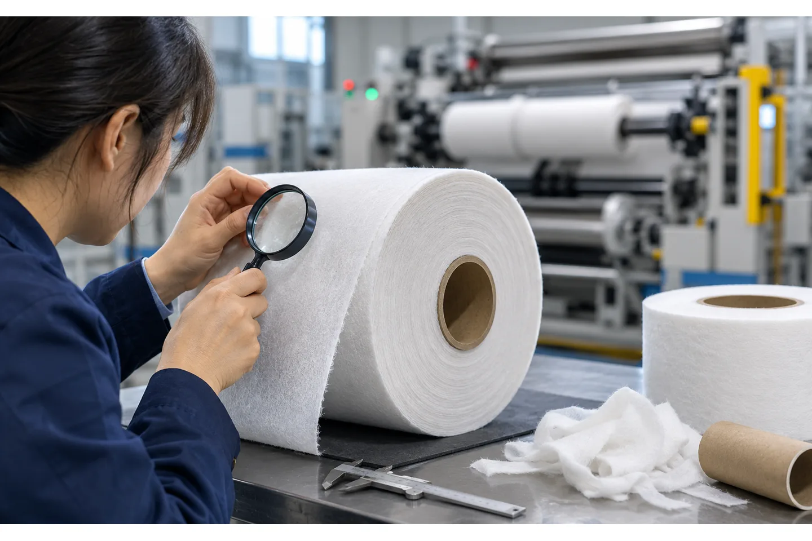

Published August 19, 2026 | By HDPTH Technical Editorial Team

Spunlace is often treated as simply another nonwoven, but buyers know that a roll of hydroentangled material can vary widely in fiber blend, GSM, absorbency, finish, loft, strength and winding condition. Those variables affect how the parent roll unwinds, how the edge is cut and how the slit rolls behave on a wipes or hygiene line.
For procurement, the useful starting point is not the machine name. It is a representative roll drawing and a list of the next process’s limits. A supplier can then select tension, guide, knife, shaft and roll-handling functions around the actual material rather than promising that a standard nonwoven line will cover every spunlace grade.
Understand the spunlace material range
Spunlace is made by bonding fibers through hydroentanglement. Commercial roll goods may use viscose, polyester, blends or other fibers, and they may be supplied for wet wipes, dry wipes, household cleaning, personal-care, filtration or technical uses. ANDRITZ describes spunlace as a versatile process serving both disposable and durable applications, which is a reminder that “spunlace” does not define one mechanical setting.
Send the supplier the fiber composition, GSM range, roll density or loft information available, surface finish, wet or dry condition, expected moisture, tensile data if available and the planned downstream operation. If one machine will convert multiple grades, identify the extremes. The widest range of material behavior usually determines the control and tooling options.
Define the parent-roll and finished-roll geometry
Parent-roll width and diameter determine the frame, unwind loading and web path. Finished-roll width, diameter, weight and core determine the rewind shafts, differential elements, unloading method and material-handling route. A slit-width range that looks simple on a spreadsheet can become difficult when the job also requires many narrow lanes or very soft finished rolls.
Include the maximum parent-roll weight, core ID and support method, the minimum slit width, number of lanes, finished-roll OD and core, roll label or packaging orientation, and the acceptable roll-end condition. EFFE 4’s nonwoven converting description illustrates how widely nonwoven roll formats can vary, while Santec’s converting capability list shows why width, OD and core data need to be specified together rather than as isolated maximums.
Tension and guiding for a fibrous web
Spunlace can be soft and compressible, and the roll may not present a perfectly uniform edge. The machine needs a stable web path, suitable roller surfaces and a tension range that prevents stretching while keeping the material flat. An edge guide or center guide may be needed when the parent roll wanders or the web edge is not optically simple.
Use the tension-control and web-guiding guide to structure the requirement, but confirm the choice with a sample. Ask the supplier to show the tension zones, sensor locations, allowable edge movement and the response to a soft or uneven edge. Avoid specifying a tension number without the material width and weight that make the number meaningful.

Choose the slitting method from the edge requirement
Shear, razor and score or crush cutting can each be useful in roll converting, but the right method depends on the spunlace structure and the edge required by the next process. A fibrous web can pull or fuzz if the knife is dull, compressed incorrectly or run at an unsuitable speed. The widthwise slit edge should be examined at the actual speed, not only at a slow demonstration setting.
Ask for blade material, adjustment range, sharpening or replacement procedure, dust or fiber-control provisions and the minimum slit width. If jobs alternate between spunlace and film or paper, make sure the knife package and recipes are compatible rather than assuming the same setup will be optimal for all three. Automatic knife positioning is valuable when changeovers are frequent, but the FAT should prove the edge and width repeatability.
Design the rewind for the next operation
The finished roll must be stable enough to transport and feed. A loose roll may telescope or wrinkle; an over-compressed roll can become difficult to unwind or change the material’s thickness profile. Core type, roll diameter, winding tension, nip or lay-on pressure and differential-shaft friction all interact. If the downstream line uses a specific unwind direction or core support, include it in the roll drawing.
Define the acceptable roll-end appearance and how the roll is unloaded. HDPTH’s nonwoven rewinding machines are evaluated for customer width, diameter and core requirements; the inquiry should identify the exact finished format instead of relying on “standard wipes roll” language.
Converting a difficult spunlace roll range?
Send representative material data and parent/finished-roll drawings. HDPTH can review tension, guiding, knife and rewind options around your actual downstream process.
Discuss your project with HDPTHPlan the line around dust, waste and housekeeping
Spunlace can release loose fibers or edge waste, especially when a dull knife or unstable web creates fuzz. The design should provide safe access for cleaning, a planned route for edge trim and a clear distinction between process waste and finished product. Whether the final solution uses a trim winder, extraction or manual collection depends on the material and plant standard.
Ask who supplies waste removal, how the trim is isolated from finished rolls, whether the frame can be cleaned without disturbing sensors and how often operators should inspect the knives. Do not specify a generic dust system without testing the actual trim. The existing dust-extraction guide can help separate machine requirements from facility responsibilities.
RFQ checklist for spunlace converting
Attach a material data sheet and roll drawings. At minimum include fiber composition, GSM, parent width and OD, core, roll weight, finished widths and diameters, line speed, winding direction, packaging, edge quality, trim handling and the next-process unwind requirement.
- Provide representative rolls from the softest, heaviest and most difficult grades.
- Define whether wet, conditioned or dry material is tested.
- List the number of width changes per shift and the required setup method.
- State the acceptable roll-end, telescoping, wrinkle and edge-fuzz limits.
- Ask for a FAT sequence with measurements and a sample-roll retention plan.
FAT and shipment checks
A spunlace FAT should run actual parent rolls at representative speed and slit patterns. Inspect edge fuzz, width, roll hardness or firmness, telescoping, wrinkles and the ability to unload and handle the finished rolls. Run at least one changeover and record knife setup, guide position, tension, speed and winding parameters.
Before shipment, approve the final recipe, spare tooling list, electrical drawings, sensor locations and operator procedure. Use the site-preparation checklist for floor, utilities and handling access. After arrival, repeat a short production trial and compare the rolls with the FAT samples; this is more useful than trying to copy a single numeric setting from the factory.
A project-based path for overseas buyers
HDPTH serves nonwoven, paper and flexible roll-material converting applications. For a spunlace project, request a configuration review that covers unwind, web guide, slitting, tension, rewind, unloading and any edge-trim function. Send enough information for the engineering team to distinguish a low-speed small-roll job from a wide parent-roll hygiene line.
Keep the inquiry focused on the output that matters: stable rolls for your next process, with defined widths, core, OD, handling and changeover needs. A sample trial and signed FAT record create a shared reference for production, procurement and maintenance teams after the machine is installed.
Turn the requirement into an RFQ line item
Before comparing quotations for spunlace slitting and rewinding machine: how to specify the line, put the operating requirement in a form that two suppliers can price and test in the same way. State the material family and its full working range, the parent-roll condition, the finished-roll drawing, the core, the number of lanes, the target speed and the changeover pattern. If the job includes more than one substrate, list each substrate separately instead of using a single average value.
- Define the quality result the plant must accept, such as edge condition, roll profile, web presence, winding stability or commissioning evidence.
- List the measurement method, sample size, inspection locations, conditioning time and who signs the result.
- Ask for the relevant tooling, sensor, tension, guiding, drive and guarding details in the supplier response.
- Require a FAT trial on representative material and a clear method for repeating the setup after cleaning, transport or a material change.
This structure helps procurement compare like with like and gives production, maintenance and quality teams a shared handover record. It also makes later troubleshooting faster: the team can see whether a result changed because of the material, the recipe, the measurement method or the machine. A concise requirement sheet is usually more valuable than a long list of headline specifications with no acceptance method.
Buyer FAQs
What information does a spunlace slitting-machine supplier need?
Provide fiber composition, GSM, surface or finish, parent-roll width and diameter, core, roll weight, slit-width range, finished diameter, speed, edge requirement and the next process’s unwind format.
Is spunlace handled like spunbond on a slitter rewinder?
Not automatically. Both are nonwovens, but fiber structure, loft, finish and roll condition can change tension, edge and winding behavior. Test the actual grades and specify the extremes.
Which slitting method is best for spunlace?
It depends on the material structure and edge requirement. Shear, razor or crush/score methods may be appropriate in different cases; a production-material trial should confirm edge fuzz, width and dust.
How do I avoid soft or telescoped spunlace rolls?
Review tension, guiding, winding torque, taper, nip or lay-on pressure, core condition and material uniformity together. Measure the finished rolls and compare them with the downstream unwind requirement.
Should a spunlace FAT use buyer material?
Yes. Actual material and representative roll formats are the most reliable way to verify the knife, tension, guiding, rewind and handling configuration.
Sources
- ANDRITZ: Spunlace line solutions and hydroentanglement applications
- CAMPEN Machinery: spunlace slitting and rewinding systems
- EFFE 4: converting and rewinding of nonwoven fabrics
- Santec: nonwoven slitting and rewinding capabilities
Specify spunlace from the roll outward
Share your fiber blend, GSM range, roll formats, edge requirement and next-process limits with HDPTH. The engineering team can then build a testable machine specification.
Send an RFQ to HDPTH